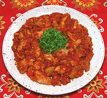

|
Chicken with TomatoesSpain - Pollo con Tomate | ||||
| Serves: Effort: Sched: DoAhead: |
4 main *** 1-1/4 hrs Yes |
In this recipe, the chicken is coated with an intensely flavored tomato sauce rather than immersed in a more liquid sauce. It is easy to make but takes checking now and then. | |||
|
|
2 ------- 4-1/2 2 4 2 1 2 1 1/3 ------- 3 ------- |
# --- # cl t T c c --- T --- |
Chicken Meat (1) -- Sauce Tomatoes, ripe Garlic Thyme Sprig Bay Leaf Paprika (2) Brandy Salt Pepper --------- Olive Oil (3) -- Garnish Parsley, chopped |
My recipe, configured for buffet service, differs some from the pattern recipe - see Comments. Prep - (25 min)
|